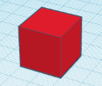
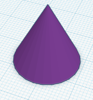
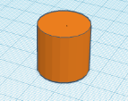
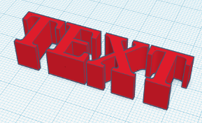
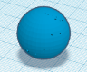
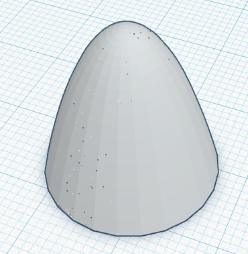
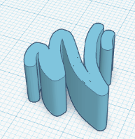
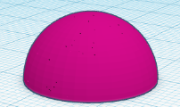
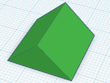
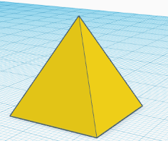

WELCOME TO TINKERCAD INFOSITE
Tinkercad is a free, easy-to-use app for 3D design, electronics
, and coding. It's used by teachers, kids, and designers to
imagine, design, and make anything! Users can quickly learn how to
use the Tinkercad software through basic tutorial lessons that focus on
the basics of the Tinkercad tool. Additional lessons help users create
artistic objects of increasing complexity by tinkering with existing designs
, as well as to work collaboratively to create new designs.
| Serial No. | Shapes | Names | Serial No. | Shapes | Names |
|---|---|---|---|---|---|
| 1. |  | BOX | 6. |  | CONE |
| 2. |  | CYLINDER | 7. |  | TEXT |
| 3. |  | SPHERE | 8. |  | PARABOLIC |
| 4. |  | SCRRIBLE | 9. |  | HEMISPHERE |
| 5. |  | ROOF | 10. |  | PYRAMID |